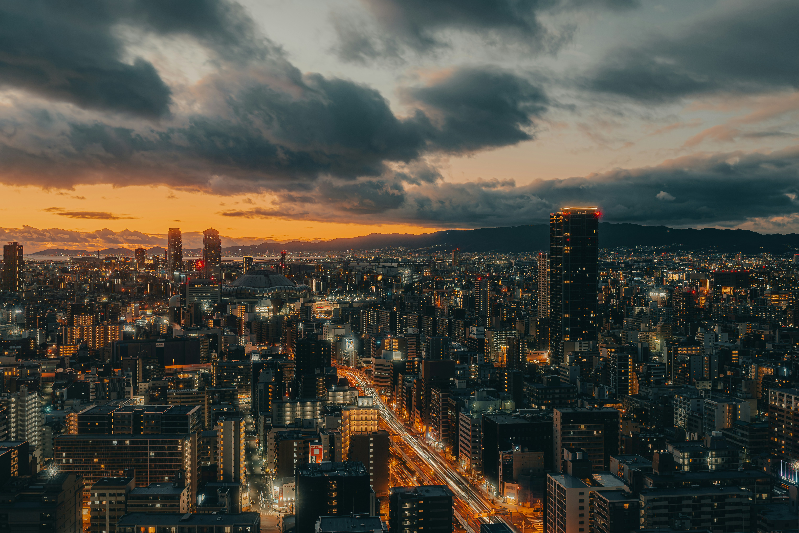
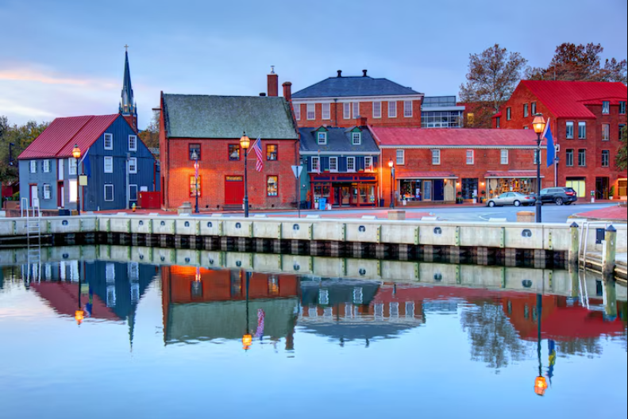
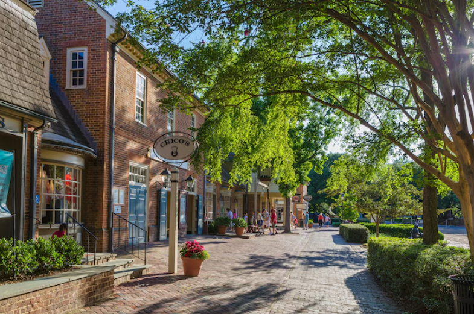

Training

A city is a human settlement of a substantial size. The term "city" has different meanings around the world and in some places the settlement can be very small. Even where the term is limited to larger settlements, there is no universally agreed definition of the lower boundary for their size.[1][2] In a narrower sense, a city can be defined as a permanent and densely populated place with administratively defined boundaries whose members work primarily on non-agricultural tasks.[3] Cities generally have extensive systems for housing, transportation, sanitation, utilities, land use, production of goods, and communication. Their density facilitates interaction between people, government organizations, and businesses, sometimes benefiting different parties in the process, such as improving the efficiency of goods and service distribution. Historically, city dwellers have been a small proportion of humanity overall, but following two centuries of unprecedented and rapid urbanization, more than half of the world population now lives in cities, which has had profound consequences for global sustainability.[4][5] Present-day cities usually form the core of larger metropolitan areas and urban areas—creating numerous commuters traveling toward city centres for employment, entertainment, and education. However, in a world of intensifying globalization, all cities are to varying degrees also connected globally beyond these regions. This increased influence means that cities also have significant influences on global issues, such as sustainable development, climate change, and global health. Because of these major influences on global issues, the international community has prioritized investment in sustainable cities through Sustainable Development Goal 11. Due to the efficiency of transportation and the smaller land consumption, dense cities hold the potential to have a smaller ecological footprint per inhabitant than more sparsely populated areas.[6] Therefore, compact cities are often referred to as a crucial element in fighting climate change.[7] However, this concentration can also have some significant harmful effects, such as forming urban heat islands, concentrating pollution, and stressing water supplies and other resources.

Established in 1749, Alexandria, Virginia, predates Washington, D.C., and more than holds its own as a destination. According to Todd O’Leary, president and CEO of Visit Alexandria, “Alexandria makes the perfect getaway from Washington, D.C. because of its walkability, being home to the region’s largest collection of independent boutiques, and a diverse dining scene where guests can sample international cuisine al fresco alongside the Potomac River.” In just a few days, visitors can explore Old Town’s cobblestone streets framed by 18th-century row houses, browse boutique shops along the King Street Mile, and stop for a sweet treat at The Creamery, a beloved ice cream shop. To learn about the city’s lesser-known African American history, join a guided tour with Manumission Tour Company. Tap into the city’s creative energy at the Torpedo Factory Art Center, which houses more than 80 working artist studios, selling items ranging from paintings to jewelry. Visitors can also tour George Washington’s Mount Vernon estate nearby. O’Leary encourages visitors to explore beyond Old Town, highlighting Del Ray as an “artsy and welcoming neighborhood known for its lively festivals and walkable Mount Vernon Avenue.”
Maryland’s Chesapeake BayThe largest estuary in the U.S., Maryland’s Chesapeake Bay has peaceful waterfront towns, from Annapolis and Kent Island to Havre de Grace and St. Michaels. In Annapolis, often called the “Sailing Capital of the U.S.,” visitors can tour the U.S. Naval Academy, set out on a sailing excursion, or wander the historic downtown, where Ego Alley and Main Street brim with shops and local flavor. No visit is complete without trying Chesapeake Bay crab cakes at local favorites like Boatyard Bar & Grill and The Choptank. In St. Michaels, travelers can learn about the region’s history at the Chesapeake Bay Maritime Museum and book a stay at the Inn at Perry Cabin.| sno | name | |
|---|---|---|
| Does this item contain inappropriate content? | Does this item contain inappropriate content? | Does this item contain inappropriate content? |
| SNO | picture | description |
|---|---|---|
| 1 | A city is a human settlement of a substantial size. The term "city" has different meanings around the world and in some places the settlement can be very small. Even where the term is limited to larger settlements, there is no universally agreed definition of the lower boundary for their size.[1][2] In a narrower sense, a city can be defined as a permanent and densely populated place with administratively defined boundaries whose members work primarily on non-agricultural tasks.[3] Cities generally have extensive systems for housing, transportation, sanitation, utilities, land use, production of goods, and communication. Their density facilitates interaction between people, government organizations, and businesses, sometimes benefiting different parties in the process, such as improving the efficiency of goods and service distribution. |
A city is a human settlement of a substantial size. The term "city" has different meanings around the world and in some places the settlement can be very small. Even where the term is limited to larger settlements, there is no universally agreed definition of the lower boundary for their size.[1][2] In a narrower sense, a city can be defined as a permanent and densely populated place with administratively defined boundaries whose members work primarily on non-agricultural tasks.[3] Cities generally have extensive systems for housing, transportation, sanitation, utilities, land use, production of goods, and communication. Their density facilitates interaction between people, government organizations, and businesses, sometimes benefiting different parties in the process, such as improving the efficiency of goods and service distribution.